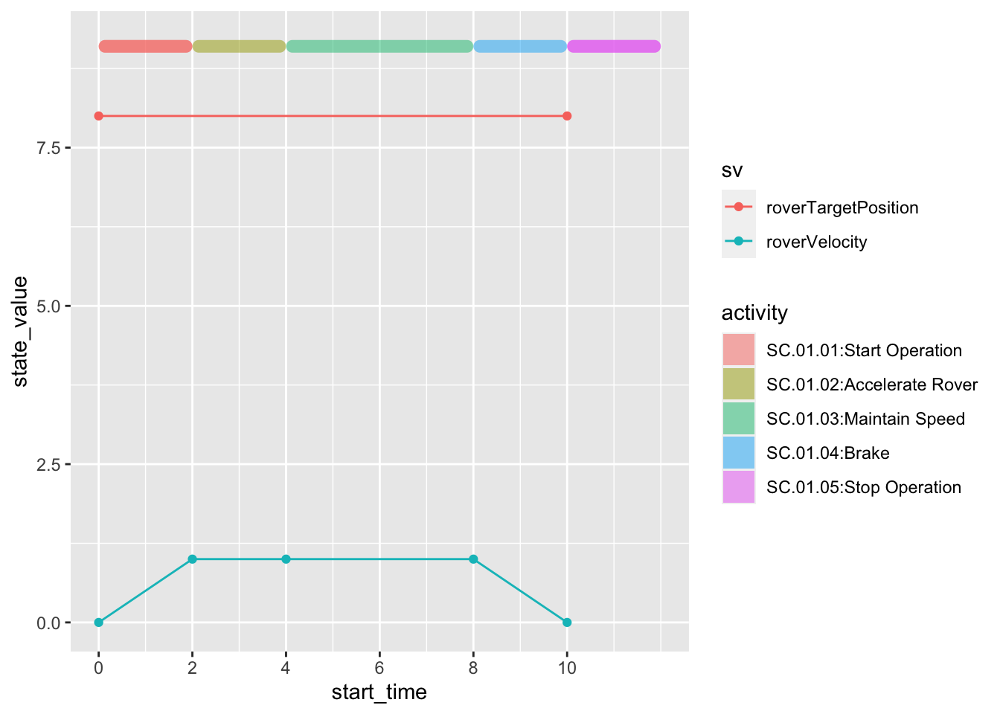
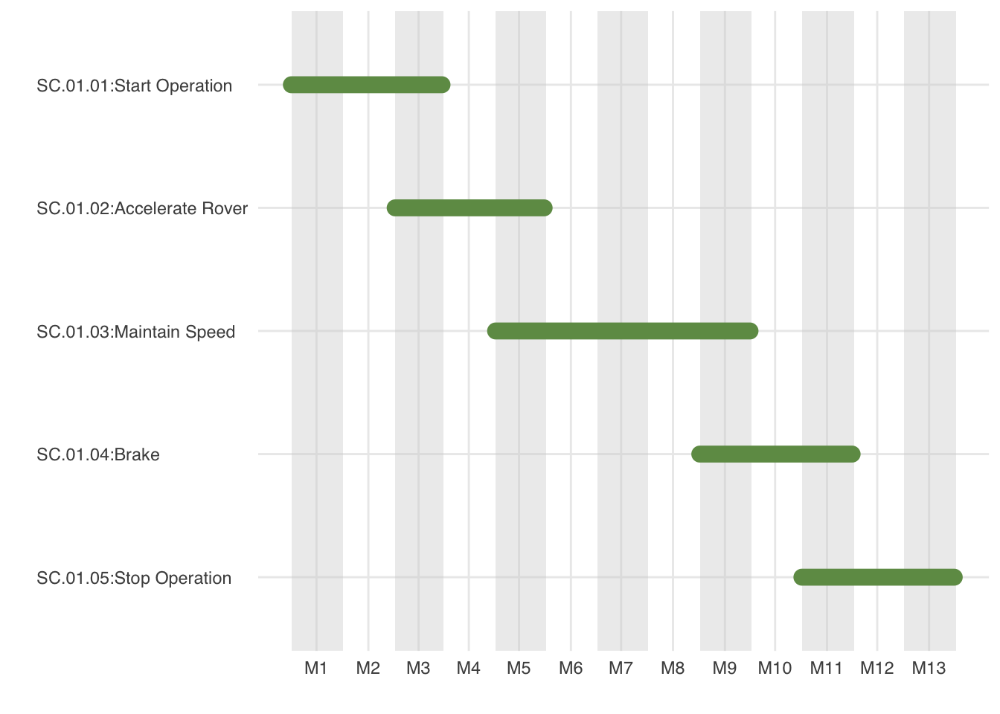

library(jsonlite)
library(tidyverse)
library(DT)
repo <- "~/Workspaces/github/open-source-rover/build/results/"
file <- "query_scenario_move_v2.json"
filepath <- paste0(repo,file)
jsondata <- fromJSON(filepath)
colnum <- ncol(jsondata$results$bindings)
df <- data.frame(matrix(rep(NA, colnum), nrow=1))[numeric(0), ]
colnames(df) <- c(names(jsondata$results$bindings))
for (i in 1:nrow(jsondata$results$bindings)) {
for (j in 1:colnum) {
df[i,j] <- jsondata$results$bindings[i,j]$value
}
}
# df <- df %>%
# add_column(value = c(0,1,1,1,0))
# df$t <- as.numeric(df$t)
df$t <- as.numeric(df$time)
df$value <- as.numeric(df$value)7 Timeline Analysis
Working Contents
7.0.1 calcurate duration and endtime
# t_end[task_i] = t_start[task_i+1]
df_task <- df %>%
distinct(task, .keep_all = TRUE) %>%
select(f2_id, f2_cname, task, t, f3_id)
df_task$t2 <- c(df_task$t[-1],df_task$t[nrow(df_task)]+2)
df$t2 <- df_task$t2[match(df$f2_id,df_task$f2_id)]ypos <- max(df$value) + 1
dy <- 0.2
df2 <- data.frame(
sv = df$statevariable,
activity = paste0(df$f2_id,":",df$f2_cname),
start_time=as.numeric(df$t),
end_time=as.numeric(df$t2),
state_value=as.numeric(df$value)
)
df2 %>%
ggplot(aes(start_time, state_value)) +
geom_point(aes(color = sv)) +
geom_line(aes(color = sv)) +
ggchicklet:::geom_rrect(
aes(
xmin = start_time,
ymin = ypos,
xmax = end_time,
ymax = ypos+dy,
fill = activity,
),
r = unit(0.5, 'npc'),
alpha = 0.5
)+
scale_x_continuous(
breaks = seq(0, 10, 2),
position = 'bottom'
)
p<-df2 %>%
ggplot(aes(start_time, state_value)) +
geom_point(aes(color = sv)) +
geom_line(aes(color = sv)) +
geom_rect(
aes(
xmin = start_time,
ymin = ypos,
xmax = end_time,
ymax = ypos+dy,
fill = activity
),
alpha = 0.5
) +
scale_x_continuous(
breaks = seq(0, 10, 2),
position = 'bottom'
)library(plotly)
ggplotly(p)7.0.2 Using Gantt Chart
library(ganttrify)
df_project <- data.frame(
wp = "scenario",
activity = paste0(df_task$f2_id,":",df_task$f2_cname),
start_date=as.numeric(df_task$t),
end_date=as.numeric(df_task$t2)
)
colnum <- length(unique(df$wp))
colpal <- MetBrewer::met.brewer(name="VanGogh1", n=colnum)
colour_palette <- colpal
g <- ganttrify::ganttrify(
project = df_project,
# spots = ganttrify::test_spots_date_month,
colour_palette = colpal,
exact_date = FALSE,
month_number_label = TRUE,
month_date_label = FALSE,
x_axis_position = "bottom",
# project_start_date = startday,
# font_family = font,
size_wp = 6,
hide_wp = TRUE,
# by_date = TRUE,
# mark_quarters = TRUE,
# mark_years = TRUE,
# month_breaks = 1,
line_end = "round",
axis_text_align = "left")
plot(g)
7.1 Generate Timeline file for modelica
df_timeline <- df %>%
filter(statevariable == "roverVelocity") %>%
select(time, statevariable, value)
outputfile <- "~/Workspaces/openmodelica-docker-start/om-develop/timeline.txt"
txt <- "#1\n"
txt <- paste0(txt, "double Tab1(",nrow(df_timeline),",2)\n")
for( i in 1:nrow(df_timeline)){
txt <- paste0(txt, df_timeline$time[i]," ",df_timeline$value[i],"\n")
}
cat(file = outputfile, txt)7.2 Execute Modelica
## need some code